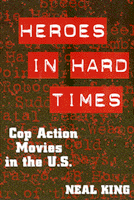

<body bgcolor="#FFFFFF" text="#000000" link="#0000FF" vlink="#CC0000" alink="#CC0000"><center><hr width="350" size="1" align="center" noshade>An in-your-face look at the cop action movie genre<hr width="350" size="1" align="center" noshade><p><a href="https://cdcshoppingcart.uchicago.edu/Cart/ChicagoBook.aspx?ISBN=9781566397018&&PRESS=temple" target="_top">Buy this book!</a> | <a href="https://cdcshoppingcart.uchicago.edu/Cart/Cart.aspx?PRESS=temple" target="_top">View Cart</a> | <a href="https://cdcshoppingcart.uchicago.edu/Cart/Cart.aspx?PRESS=temple" target="_top">Check Out</a></p><p></p></center><!--none//--><h1>Heroes in Hard Times</h1>
<H2>Cop Action Movies in the U.S.</H2>
<h3>Neal King</h3>
<P>cloth 1-56639-701-4 $59.50, Jun 99, <FONT COLOR=#990033>Out of Stock Unavailable</FONT>
<br>paper 1-56639-702-2 $31.95, Jun 99, <FONT COLOR=#990033>Available</FONT>
<br>Electronic Book 1-59213-819-5 $31.95 <FONT COLOR=#990033>Out of Stock Unavailable</FONT>
<BR> 282 pp
5.5x8.25
</P><BLOCKQUOTE><I>"The cop-at least in cinematic fantasy-is America's last action hero, the last 'real man' in a world of emasculated wimps. In this discerningly analytic, yet erudite and even occasionally impish study, Neal King shows that such fantasies ignore the reality of real police work while offering a subterraneanhomoerotic thrill for both the character and his (male) viewer. A significant work that straddles the boundaries of cultural studies and sociology."</I>
<BR>&#151<B>Michael Kimmel</B>, author of <I>Manhood in America</I><I></I></BLOCKQUOTE>
<P>King studies how, in the cop action genre, working-class police officers weigh in on such topics as racial justice, homosexuality, misogyny, unemployment, worker resistance, affirmative action, drug use, poverty, divorce, and the use of violence to deal with social problems. Facing their enemies with wisecracks and firepower, these men prove themselves at once complicitous in a system of violence and corruption and worthy to "blow away," with neither hesitation nor remorse, their&#151and society's&#151menacing threats. The central male figures in these stories are heroes in their fight against criminals, but, as individuals, they feel undervalued by women, unappreciated by their bosses, and out of place in a society where fat cats and liberals have all the power. Such "hard times," King's study reveals, position them to simultaneously long for, disdain, and heroically&#151if violently&#151stake their frustrated claim to white male privilege. </P>
<P>Discussing such topics as white male guilt and the rage of the oppressed and examining such films as <I>Lethal Weapon</I>, <I>Die Hard</I>, and <I>Silence of the Lambs</I>, King's book notes the socially-charged roles given to American culture's fictional police heroes. The last artisan in a culture that has become increasingly corporate and bureaucratized, the movie cop is the last 'real man' in a world that has emasculated men and the last non-conforming patriot in a world that pays more attention to rules than what is morally right. A book that shows how modern mythology makes sense of rampant corruption (and provides entertainment in its punishment), <I>Heroes in Hard Times</I> will educate and provoke those interested in American popular culture, film, and gender studies. </P>
<BR>&nbsp;<h2>Excerpt</h2><P>Excerpt available at <a href="http://www.temple.edu/tempress">www.temple.edu/tempress</a></p>
<BR>&nbsp;<h2>Reviews</h2>
<p><I>"Neal King loves a good cop-action flick, and in </i>Heroes in Hard Times: Cop Action Movies in the U.S.<i>, it shows. His obvious enthusiasm as a fan—"Whoa, good crash!"—lends an intensity to his scholarship. And like-minded readers will delight in snippets of hard-boiled dialogue from Die Hard, Sudden Impact, and many other films. But for all its pleasures of fandom, the book has a deeper purpose. The universe of cop-action films, Mr. King argues, acts as a "cracked mirror" of American society, reflecting in particular the anger, fantasies, and guilt of white men who feel they have "lost ground." It is, he says, a self-conscious reflection."</I>
<br>&#151<b><I>Chronicle of Higher Education</I></b>
<p><I>"King's study is good to read. In fact, it might prove most enlightening to those of us who have tended to disdain this impoverished, headachey genre. In straight-talk prose. King takes account of the prejudices many readers will bring to his subject; certainly he can't be accused of sidestepping the toughest objections to these movies. In successive chapters he regards them through prisms of gender, race, and economics; the longest chapter is on the symbolism of sodomy….King does not defend cop action so much as seek thematic coherence from a position of sympathy."</I>
<br>&#151<b><I>Film Quarterly</I></b>
<p><I>"King's analysis remains valuable for the contribution it makes in taking seriously an oft derided and dismissed form of popular culture that speaks directly to issues of masculinity…. This book will be a useful resource for those interested in understanding how images of hyper-masculinity--the "hard man"--represent both the excess and the ordinary parts of masculinity in cinema. King's methodology is helpful in reading media texts, and his provocative interpretations of these films--particularly his readings of homosocial sadomasochism--will likely generate much discussion."</I>
<br>&#151<b><I>Women’s Studies in Communication</I></b>
<BR>&nbsp;<h2>Contents</h2><P>
<P>Preface
<br>1. Losing Ground at the Movies
<br>2. Out in the Cold
<br>3. Back Home Again
<br>4. White Male Guilt
<br>5. Rage of the Oppressed
<br>6. The Criminal Class
<br>7. Sodomy and Guts
<br>8. Conclusion: Good Guys?
<br>Appendix: Using Movies
<br>Notes
<br>Index
</P><BR>&nbsp;<H2>About the Author(s)</H2>
<table><tr><td valign="top"><img src="/tempress/authors/1448_au.gif" height="90" width="75"></td><td width="100%" valign="middle"><p><B>Neal King</B> is Associate Professor in the Department of Interdisciplinary Studies at Virginia Tech.</P></td></tr></table>
<BR><H2>Subject Categories</H2>
<p><A HREF="/tempress/general.html" TARGET="_top">General Interest</a>
<BR><A HREF="/tempress/cinema.html" TARGET="_top">Cinema Studies</a>
<BR><A HREF="/tempress/gender.html" TARGET="_top">Gender Studies</a>
</p>
<p align="center"><a href="https://cdcshoppingcart.uchicago.edu/Cart/ChicagoBook.aspx?ISBN=9781566397018&&PRESS=temple" target="_top">Buy this book!</a> | <a href="https://cdcshoppingcart.uchicago.edu/Cart/Cart.aspx?PRESS=temple" target="_top">View Cart</a> | <a href="https://cdcshoppingcart.uchicago.edu/Cart/Cart.aspx?PRESS=temple" target="_top">Check Out</a></p><p><font face="Arial" size="1"><a href="copyright.html" onMouseOver="window.status='Web Copyright Policy';return true;" onMouseOut="window.status=''" title="Web Copyright Policy">&copy;</a> 2015 <a href="http://www.temple.edu" target="new" onMouseOver="window.status='Link to Temple University home page';return true;" onMouseOut="window.status=''" title="Link to Temple University home page">Temple University</a>. All Rights Reserved. http://www.temple.edu/tempress/titles/1448_reg.html</font></p>